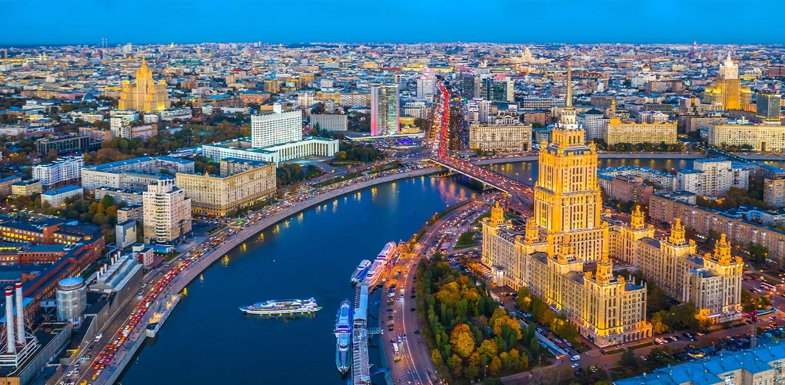
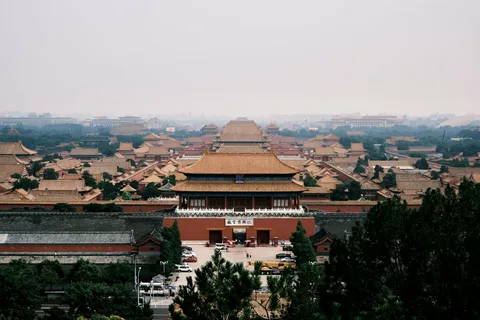
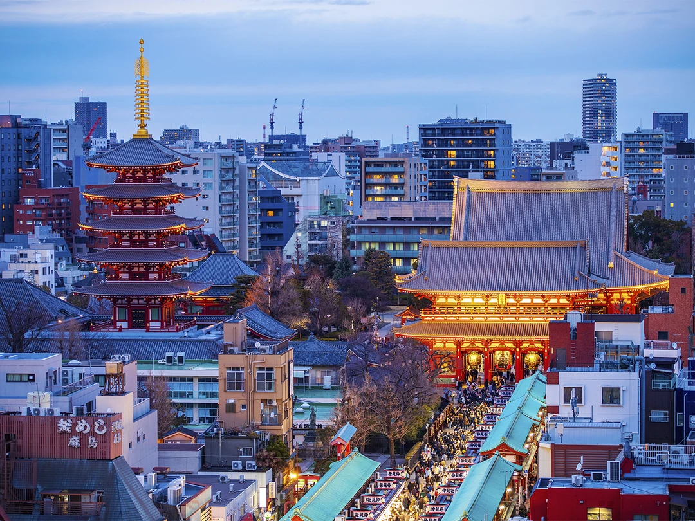
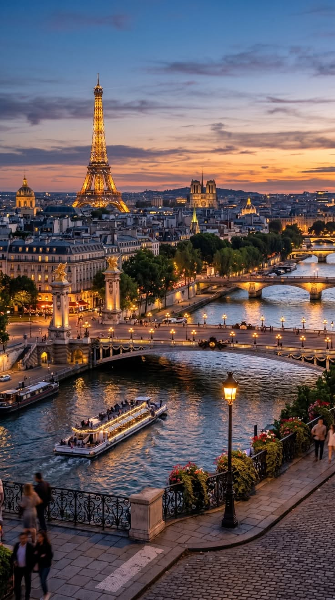
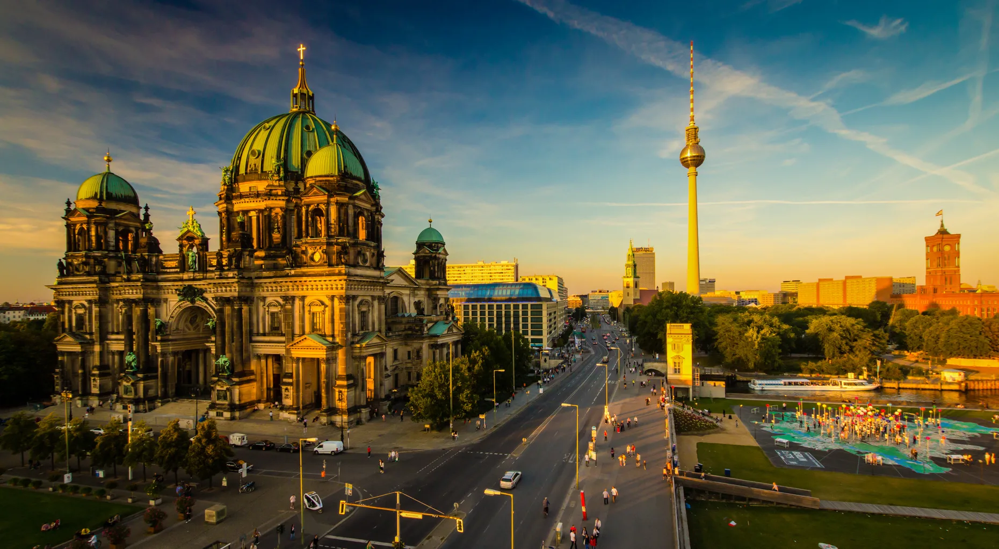
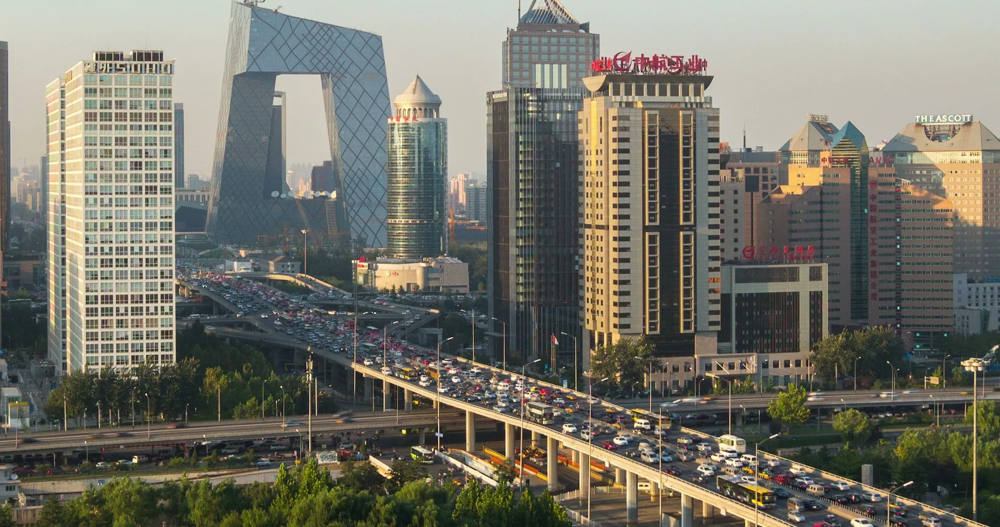
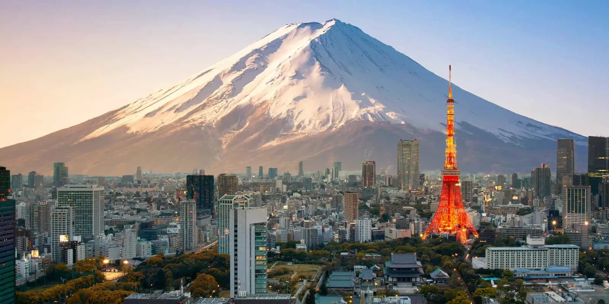
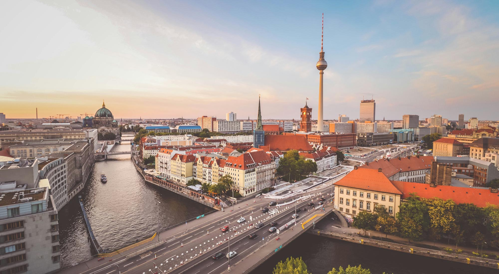

 Москва
Москва
Москва — столица Российской Федерации и крупнейший город страны. Она расположена на реке Москве и является главным политическим, экономическим и культурным центром России. Город имеет долгую историю, которая насчитывает более восьми столетий.
Одним из самых известных мест Москвы является Красная площадь, рядом с которой находятся Кремль и собор Василия Блаженного. Московский Кремль служит важным историческим и архитектурным символом страны. Также город известен Большим театром, храмом Христа Спасителя и высотными зданиями делового центра Москва-Сити.
Москва постоянно развивается: здесь строятся современные здания, расширяется метро и создаются новые общественные пространства. При этом в городе сохраняются старинные улицы, усадьбы и исторические памятники, позволяющие увидеть разные периоды его развития.

ПекинПекин — столица Китайской Народной Республики и один из важнейших городов Восточной Азии. Его история насчитывает несколько тысячелетий. На протяжении длительного времени город был резиденцией китайских императоров и центром политической жизни страны.
Одной из главных достопримечательностей Пекина является Запретный город — огромный дворцовый комплекс, в котором жили императоры Китая. Также известны Храм Неба, площадь Тяньаньмэнь и многочисленные традиционные кварталы с узкими улицами и внутренними двориками. Недалеко от столицы находятся участки Великой Китайской стены.
Архитектура Пекина сочетает традиционные китайские постройки с современными небоскрёбами. В городе расположены крупные деловые центры, университеты, музеи и спортивные сооружения. Пекин играет важную роль в развитии науки, промышленности, образования и культуры Китая.

ТокиоТокио — столица Японии и один из крупнейших городских центров мира. Город расположен на острове Хонсю. Раньше он назывался Эдо, а в XIX веке получил современное название и стал столицей страны. Сегодня Токио является одним из главных центров японской экономики, науки и технологий.
Среди известных достопримечательностей города — Токийская башня, Императорский дворец и храм Сэнсо-дзи. Популярностью пользуется перекрёсток Сибуя, известный большим количеством пешеходов. В Токио также находятся многочисленные парки, музеи и торговые районы.
Город известен развитой транспортной системой, скоростными поездами и современными зданиями. При этом здесь сохраняются традиционные храмы, сады и кварталы, в которых можно познакомиться с японской культурой. Токио наглядно показывает, как древние традиции могут сочетаться с современным образом жизни.
 Париж
Париж
Париж — столица Франции, расположенная на реке Сене. Город имеет многовековую историю и считается одним из важнейших культурных центров Европы. Париж известен своей архитектурой, музеями, театрами и художественными галереями.
Самым узнаваемым символом города является Эйфелева башня, построенная к Всемирной выставке 1889 года. Среди других известных достопримечательностей — Лувр, собор Парижской Богоматери, Триумфальная арка и Елисейские Поля. Лувр является одним из крупнейших и наиболее известных художественных музеев мира.
Париж отличается характерной архитектурой: широкими бульварами, каменными зданиями и многочисленными мостами через Сену. Город также знаменит кафе, кондитерскими и высокой модой. Он ежегодно привлекает множество туристов, желающих познакомиться с французской историей и культурой.

БерлинБерлин — столица Германии и крупнейший город страны. Он расположен на северо-востоке Германии и является важным политическим, экономическим и культурным центром. История Берлина тесно связана с историей немецкого государства и событиями XX века.
Одним из главных символов города являются Бранденбургские ворота, построенные в XVIII веке. Большое историческое значение имеет здание Рейхстага, в котором заседает немецкий парламент. Также известны Берлинская телебашня, Музейный остров и сохранившиеся участки Берлинской стены, напоминающие о разделении города в годы холодной войны.
Современный Берлин отличается разнообразной архитектурой: рядом с историческими зданиями находятся современные офисы, музеи и жилые комплексы. В городе работают университеты, научные учреждения, театры и художественные галереи. Берлин известен также своей культурной жизнью и многочисленными общественными пространствами.